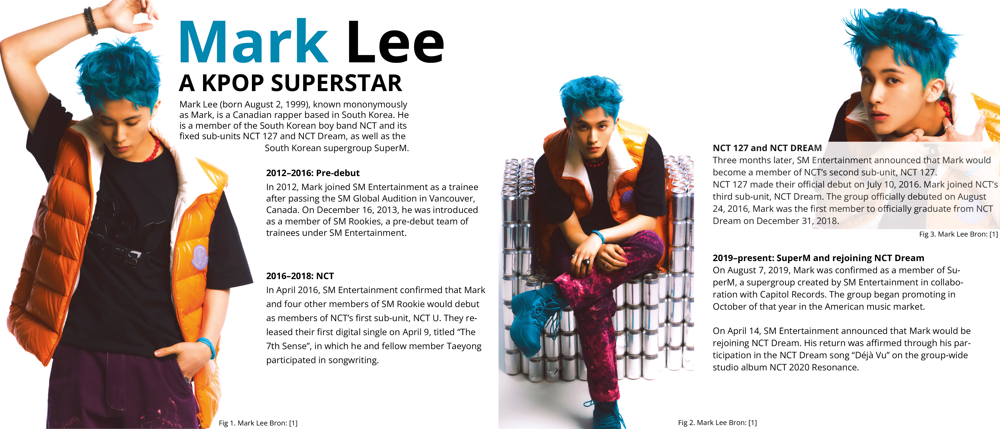

Schoolproject
Expositie Muur
Een minimalistische expositie muur die op een overzichtelijke manier informatie over brengt aan bezoekers.

Vak
Media Design
Opdrachtgever
School
Samenwerking
Individueel
Over het project
Dit project richtte zich op het ontwerpen van een en overzichtelijke expositie muur voor een zelfgekozen bekend persoon.
Tijdens het ontwerpen werd er aandacht besteed aan witruimte, kleurgebruik en contrast. De layout is overzichtelijk en behoud aandacht.